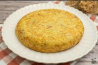

Ingredientes
- 4 huevos
- 500 g de patatas
- 1 cebolla
- Aceite de oliva
- Sal
Pasos de realización
- Pelar las patatas y cortarlas en rodajas finas.
- Cortar la cebolla en tiras finas.
- Freír las patatas y la cebolla a fuego medio hasta que estén tiernas.
- Batir los huevos en un bol y añadir sal.
- Escurrir las patatas y mezclarlas con los huevos.
- Cuajar la tortilla en una sartén y darle la vuelta con cuidado.
- Cocinar hasta que quede al punto deseado y servir